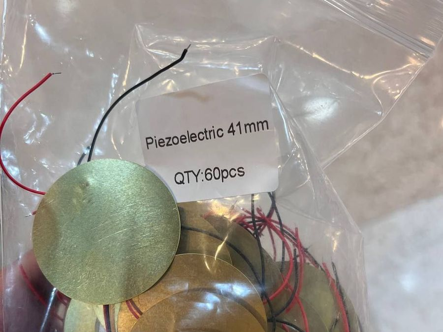
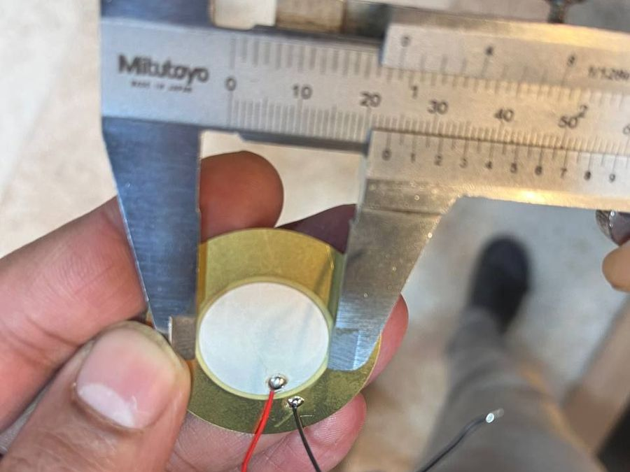
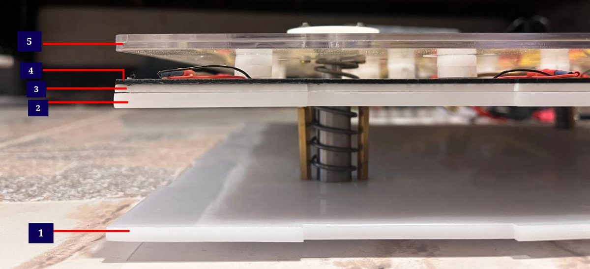
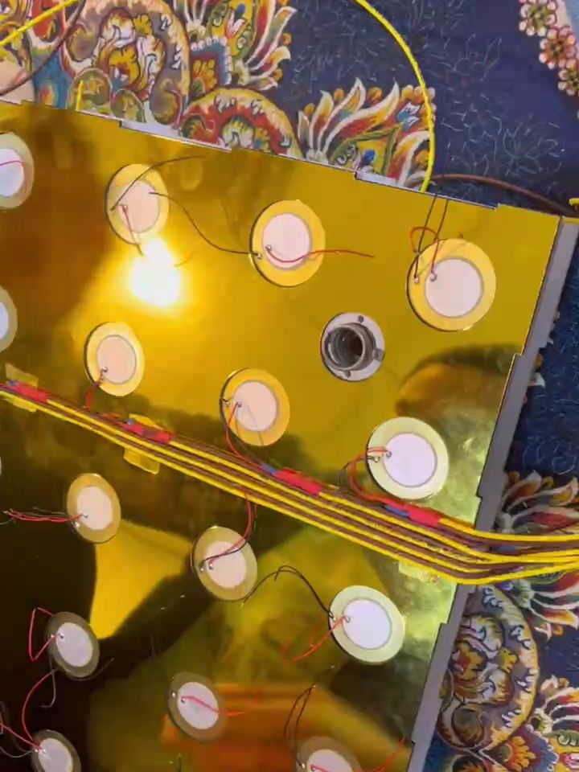
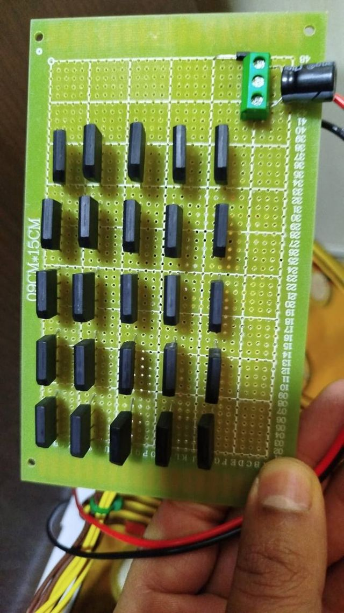
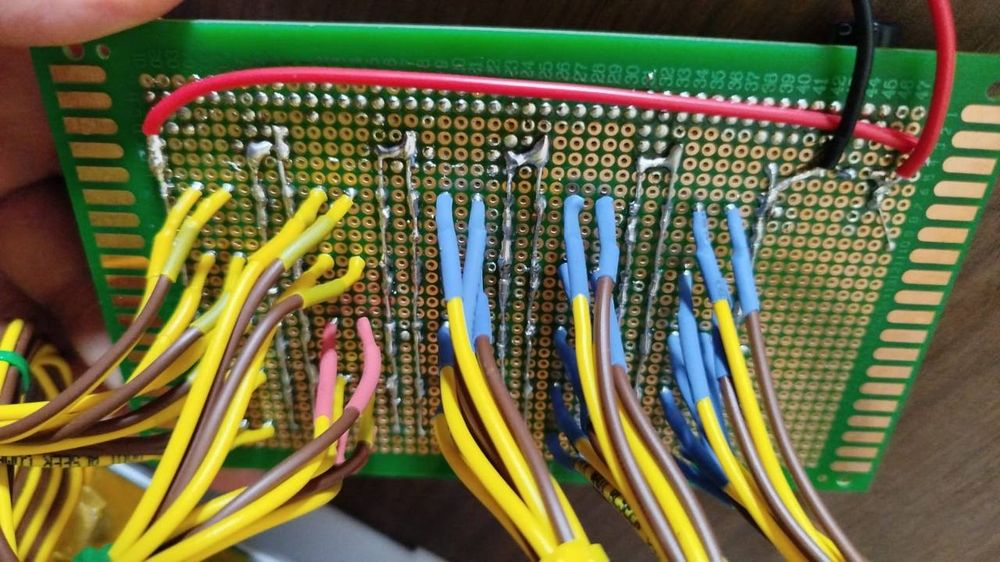
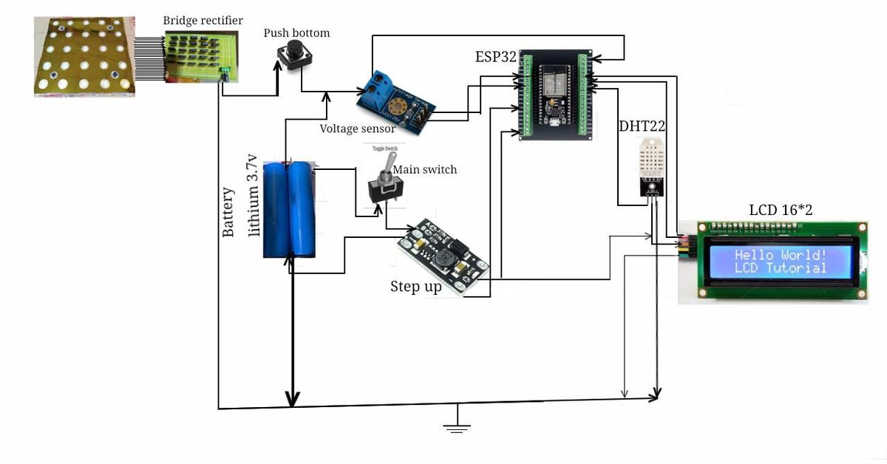
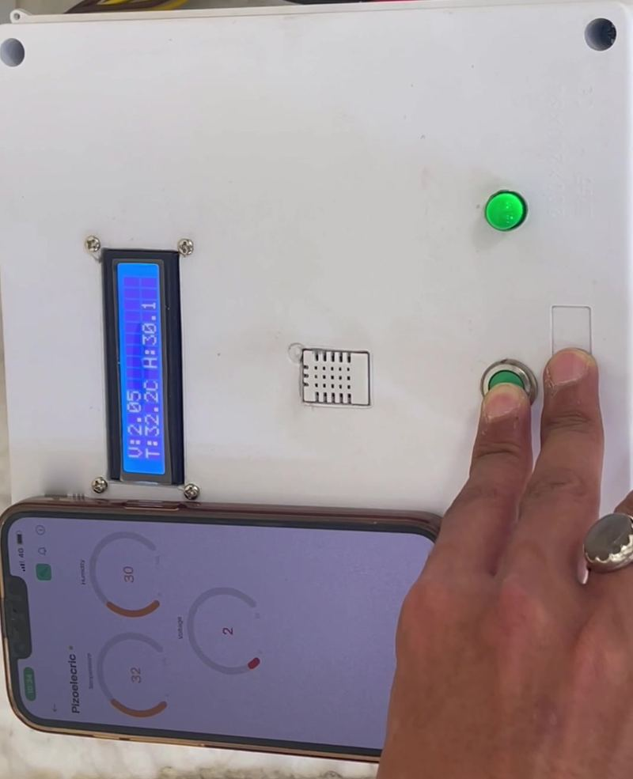

- 01
The problem
Sensors need power. Many places have none.
Weather and environmental sensors are often installed where there is no mains supply. They run on batteries that someone has to replace, or on cables that cost money to lay.
Meanwhile a busy walkway, a school corridor or a building entrance turns thousands of footsteps into nothing.
- 02
The idea
Turn every step into electricity.
A piezoelectric disc produces a voltage when it is bent. The team placed 25 of them under a spring-loaded plate. Each press flexes the discs by a few millimetres, and the electricity they produce is stored and used to run a small IoT weather station.

The 41 mm piezoelectric discs used in the plate. 
Every part was measured before it went into the design. - 03
The build
Five layers. One shaft. Twenty-five discs.
Mechanics. Five acrylic layers hold the discs in place. A central shaft with bearings keeps the plate moving straight up and down, and springs push it back after every step.

The five layers: 1 base, 2 support, 3 piezo slots, 4 securing layer, 5 top plate with 2.5 mm protrusions that press on the discs. Electronics. The discs are wired in five groups of five, parallel inside each group and the groups in series, and rectified with KM310 bridge rectifiers. A 2200 µF capacitor smooths the output and charges two 3.7 V lithium cells. A step-up converter supplies 5 V to an ESP32, which reads a DHT22 temperature and humidity sensor and a voltage sensor, shows the values on a 16×2 LCD and sends them to a phone through the Blynk app.

The 25-disc array during assembly. 
Rectifier board with 25 KM310 bridges. 
Soldered wiring behind the board. 
System diagram: piezo array and rectifiers, lithium battery, step-up converter, ESP32 with DHT22, voltage sensor and LCD. Watch a disc go in
A 39-second close-up of fitting a piezoelectric disc onto the acrylic layer.
Full assembly
The complete build in 2 minutes 52 seconds: placing the piezoelectric discs on the plate and routing the wiring.
- 04
The proof
Step on it. Watch the numbers move.
Live test, 55 seconds
A person steps on the plate. The unit's LCD and the phone app show voltage, temperature and humidity in real time.
Capacitor voltage in the load tests was measured with a Hantek 6204BD oscilloscope.
More weight, more voltage
Capacitor voltage after 40 presses, one press per second.
3.7 V battery voltage
02468 V3.8 V4.8 V7.0 V15 kg20 kg30 kgStable for 2 hoursRun continuously under 15, 20 and 30 kg loads, the ESP32 supply stayed at about 5 V with no interruptions.Accurate readingsDHT22 readings stayed within ±0.5 °C and ±2 % humidity of reference instruments.Wireless by designVoltage, temperature and humidity reach a phone through Wi-Fi and the Blynk app.
The unit's LCD and the phone app show the same live values. - 05
From project to product
Where this could work.
- Busy walkways, school corridors and shopping-centre entrances
- Self-powered IoT sensors: weather, occupancy, smart flooring
- Emergency and isolated sites where mains power is not available
Where the project stands, and what comes next:
DoneLab prototypeBuilt, wired and tested with 15, 20 and 30 kg loads.NextField pilotWeather-sealed plates in a real walkway, measuring the energy delivered per step.LaterProduct versionSupercapacitor storage, long-range data links such as LoRa, and a dedicated mobile app.